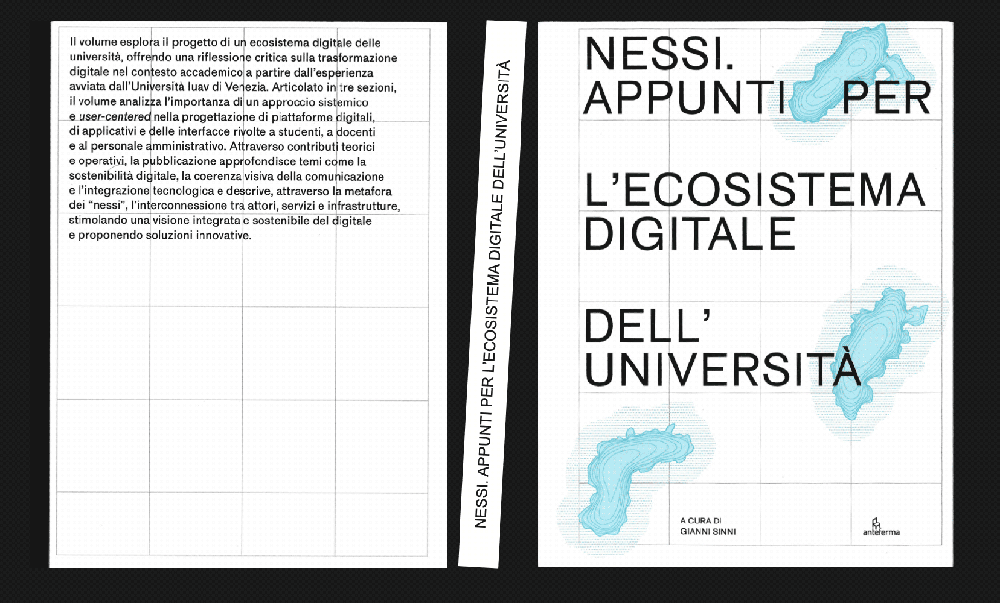
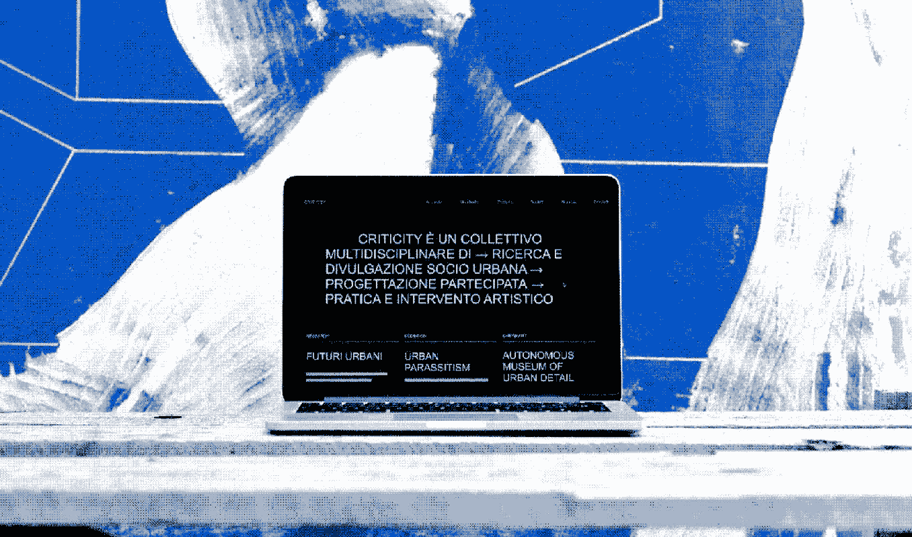
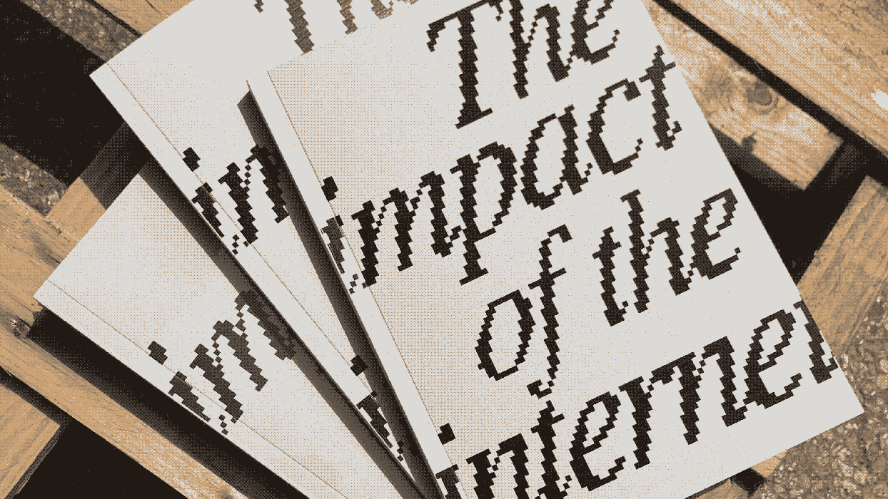
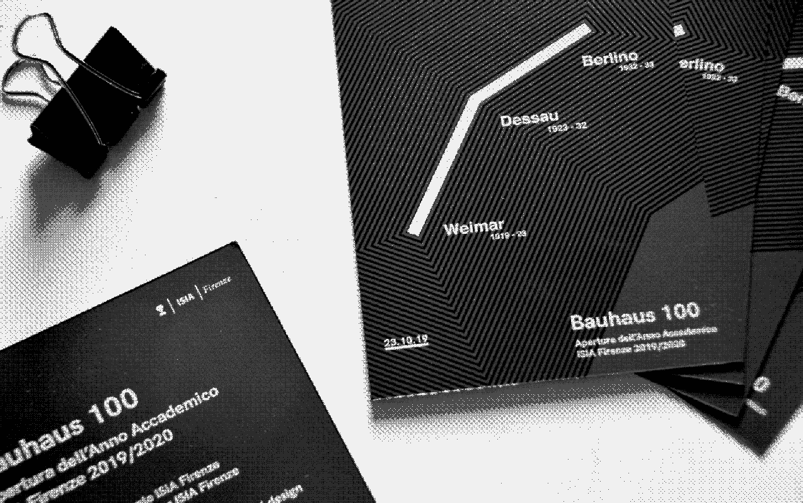
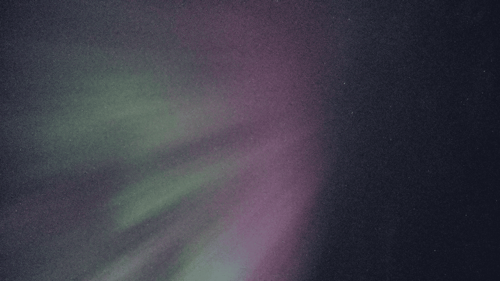

Giovanni Foppiani
Communication designer & PhD researcher






About
Through his design practice, he collaborates with public institutions, conscious brands and collectives to foster sustainable, social and digital innovation — reflecting a consistent commitment to Communication for the Common Good.
He leverages his design background to steer the energy transition toward socially desirable scenarios by bridging industry and research, using data visualization as a navigational tool for climate-positive synergies.
During the past years I had the chance to travel and work in different european countries — Weimar (Germany), Kuopio (Finland) and Almere (Netherlands) — where I could discover and affine a broad variety of disciplines and methodes.
2024 — 25
While working as a researcher at the University Iuav of Venice, he explored social initiatives as drivers of social and digital innovation. As an assistant professor, he organised the Amplify Social Initiatives and Welcome Day workshops, as well as Prof. Gianni Sinni's course titled Public Futures. Data, rights, design. with Irene Sgarro.
During his fellowship, he collaborated with research groups such as CTRL+JUNK and the University Digital Ecosystems project to promote communication through sustainable innovation.
2023 — 24
As a designer, he developed Criticity, a low-carbon digital platform designed to minimize carbon emissions related to web usage while amplifying the impact of dissemination. He holds a Master's degree in Communication Design and Digital Product from ISIA Firenze; his graduation project investigated The Impact of the Internet, focusing on its energy consumption, sustainable practices, and the implications for users and the planet.
Research interests
- Regenerative design
- Regenerative mobility
- Social innovation
- Digital sustainability
- Communication for the Common Good
- Techno-social ecosystems
- Critical design
- Civic design
- Co-design
- Service design
- Climate adaptation
- Low-tech solutions
- Data visualization
- Public futures
- Third-sector design
- Energy transition
Publications
Projects
Cross-sectoral work across:
- Outdoor
- Recycled textile
- Recycle industry
- Communication
- Digital sustainability
- Mobility & cleantech
- Research & education
| Year | Title | Discipline | Collaboration |
|---|
Organizations with which I have had the pleasure of collaborating:
- ISIA Firenze
- Savonia University (FI)
- Knitwear-Lab (NL)
- Slataper 8
- Sagra Sonora
- Alia Toscana
- Rifò-Lab
- Oxfam Italia
- FEEM Foundation
- Criticity
- Università Iuav di Venezia
- Fondazione Iuav
- Confindustria Veneto Est
- komoot
- Veloplus
- Mac in a Sac
- Kempower Oy